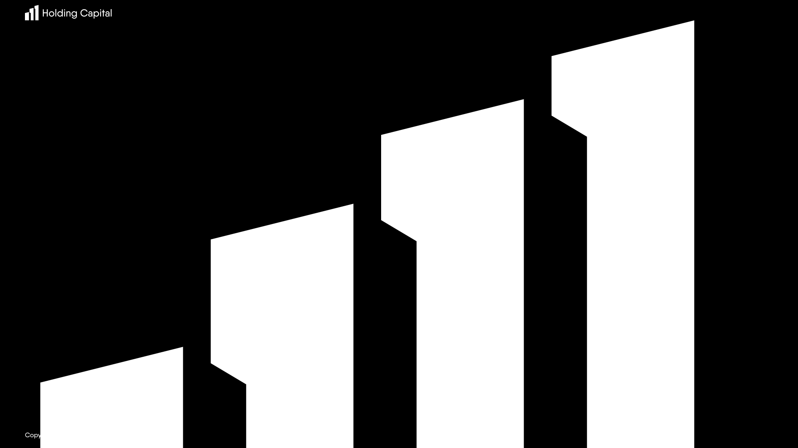

За восемнадцать лет работы я так и не научился предсказывать, сколько времени займёт проект. Иногда промахиваюсь раза в два, иногда раз в пять. Да что там проект — я и несколько дней не могу прожить, как запланировал. Вот моя типичная неделя:
Можно было бы сделать простой вывод, что я неорганизованный дурачок. Но как-то же мне удаётся самостоятельно жить, покупать еду не в долг и делать работу, которую никто не заказывал — например, писать эту книгу. Нет, я не считаю себя неорганизованным, просто я организован иначе.
К любой задаче можно подойти как к изобретательской, а можно как к рутинной. Изобретательская задача — это когда проблема известна, а решение нет. Результат не обязан быть шокирующе неожиданным, он вполне может опираться на давно известные принципы. Но готовой инструкции нет. Чтобы решить такую задачу, требуется абстрактное мышление и направленный творческий поиск. Рутинную задачу можно сделать по рецепту. По чужому, если аккуратно его прочесть и точно выполнить, или по собственному — иногда автоматически, даже не понимая, что следуешь рецепту. Рутинные задачи необязательно маленькие, они могут быть объёмными и сложными, если эта сложность раскладывается на простое и шаблонизируется.
Рутинные задачи точно есть в любом проекте. А вот доля изобретательских задач может быть любой, включая нулевую. И это не зависит: ни от сложности объекта — простейший логотип можно изобретать, а можно сделать по готовой формуле; и целую социальную сеть можно изобрести, а можно собрать из готовых шаблонов; ни от новизны жанра — дизайнер, впервые верстающий книжный титул, будет решать изобретательскую задачу, а дизайнер, второй раз работающий над модным виар-приложением, может собрать его из частей первого и ничего не выдумывать; ни от постановки задачи — когда просят сделать что-то принципиально новое, обычно имеют в виду новое для себя, а не новое для человеческой цивилизации, и работа, сделанная проверенным методом по старым лекалам, может оказаться ровно тем, что нужно; и наоборот, когда просят повторить чужую понятную штуку, дизайнер может усомниться, что здесь это подходит, и начать думать с нуля. Доля изобретательства в работе в основном зависит не от того, что нужно сделать, а от того, кто будет делать — как он сам себе ставит задачу.
Я привык работать с высокой долей изобретательства. Это мой внутренний стандарт. Я не против рутины — иногда прикольно поделать что-то простое, успокаивает. И я совершенно точно не против унификации и шаблонизации — это интересно и это выгодно. Но одно дело любить унификацию как процесс, а другое — когда шаблоны готовы, делать по ним проекты. Делать по шаблону — это не ко мне, я в тот момент уже ушёл придумывать новое. Это не хорошо и не плохо, даже не могу сказать, что это мой выбор — скорее, особенность психики. Может, если бы я меньше изобретал — принёс бы больше пользы и заработал бы больше денег, кто знает! Я не могу заменить себе железо, могу только аккуратно обновляться до новой версии. Я всегда искал способ сделать оригинально, ок? Вот такой я человек. И всегда страдал от этого!
Параграф текст йопта
Параграф текст йопта
В изобретательских задачах результат не зависит линейно от времени, числа попыток или количества прожитых лет. Процесс всегда один: делаешь и переделываешь, и улучшаешь, и ухудшаешь, и снова улучшаешь, и не понимаешь, уже готово или ещё нет. И уходишь куда-то в сторону, как будто там что-то есть, а там ничего, и всё по новой. В рутинных задачах довольно просто быть классным и не страдать — достаточно дисциплины. В изобретательских задачах дисциплина не помогает. Сначала я думал, что выход в повышении дизайнерского мастерства. Всё предусматривать, делать не хрупко, выучить языки дизайна, чтобы сразу получалось круто, чтобы не переделывать. И так отвоевать себе больше времени, сил и личной свободы. Я думал, что если прокачать дизайнерские навыки — жизнь починится. Но ничего подобного! Конечно, без навыков совершенно никуда, но они не гарантируют спокойной жизни. Наоборот, чем больше умеешь — тем больше видишь, а чем больше видишь — тем больше разного хочешь перепробовать в поисках идеала. Страдание не уменьшается. Потом я думал, что выход в мастерстве коммуникации. Понимать людей, понимать задачи, лучше всех знать требования и критерии оценки, всегда всё прояснять, разруливать любые ситуации, чтобы не ходить кругами и зря не нервничать. Снова не помогло! Конечно, тупых конфликтов становится меньше, зато теперь можно попасть в более сложные проекты, и это круто, но жизнь совершенно не упрощает. Потом я думал, что выхода, вероятно, и вовсе нет. Но он нашёлся! Выход был в том, чтобы пересмотреть отношение ко времени, планированию, дедлайнам и обещаниям.